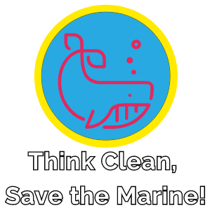

Information about the site
Site created by
Kaloyan
Nechev
ICT 12220117
Site created using
HTML5
CSS3
JavaScript
jQuery
Animals used in the making of this site
dolphin
sea turtle
shark
octopus
No animals were harmed during the making of this site
Social media sources
Wikipedia
Youtube
Instagram
Reddit